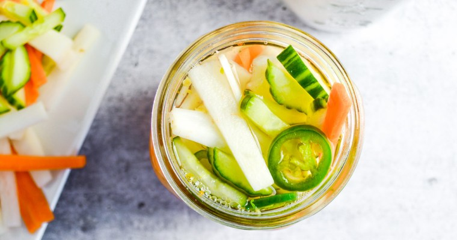

Spicy Vietnamese Quick-Pickled Vegetables

Description
These Vietnamese-style pickled vegetables are traditionally served as a condiment for banh mi sandwiches, but they make a nice side for anything you would
normally pair with coleslaw, like fish and chips, barbecued meats, fish tacos, etc. Store in the refrigerator for up to one month.
Pickled carrots and daikon are a signature addition to Vietnamese dishes. Their bright brine adds a splash of colour to the deep spices and flavours of
Vietnamese proteins, while the crunch adds depth and texture to the otherwise soft or dry aspects of something like a banh mi sandwich.
Ingredients
- 2 cups water
- 1 ½ cups rice vinegar
- 2 teaspoons salt
- 2 tablespoons white sugar
- ½ pound carrots, peeled and cut into matchsticks
- ½ pound purple daikon radish, peeled and cut into matchsticks
- ½ pound English cucumbers, thinly sliced
- 2 medium jalapeno peppers, sliced into rings
Steps
- Inspect two pint-sized jars for cracks and rings for rust, discarding any defective ones. Immerse in simmering water until needed. Wash new, unused lids
and rings in warm soapy water.
- Bring water, vinegar, sugar, and salt to a boil in a medium saucepan over medium heat. Cook until sugar dissolves, about 3 minutes. Turn off the heat and
let it cool for 2 minutes.
- Meanwhile, divide carrots, radish, cucumbers, and jalapeños evenly between the two clean jars. Pour hot liquid over vegetables in the jars and let it come
to room temperature, about 30 minutes.
- Screw on lids and refrigerate for at least 1 hour before serving.